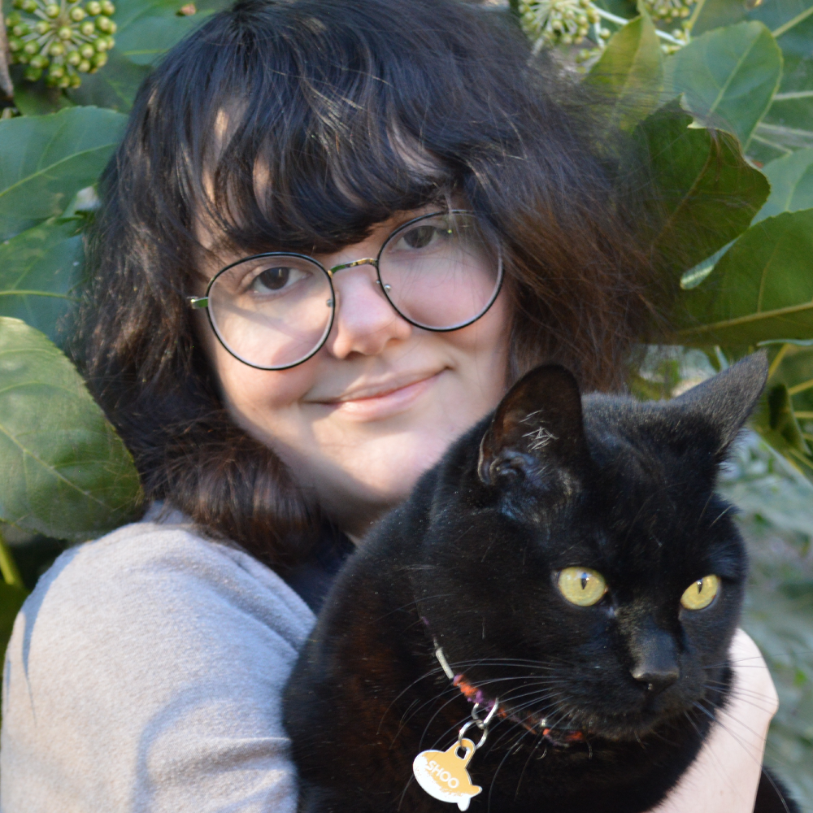
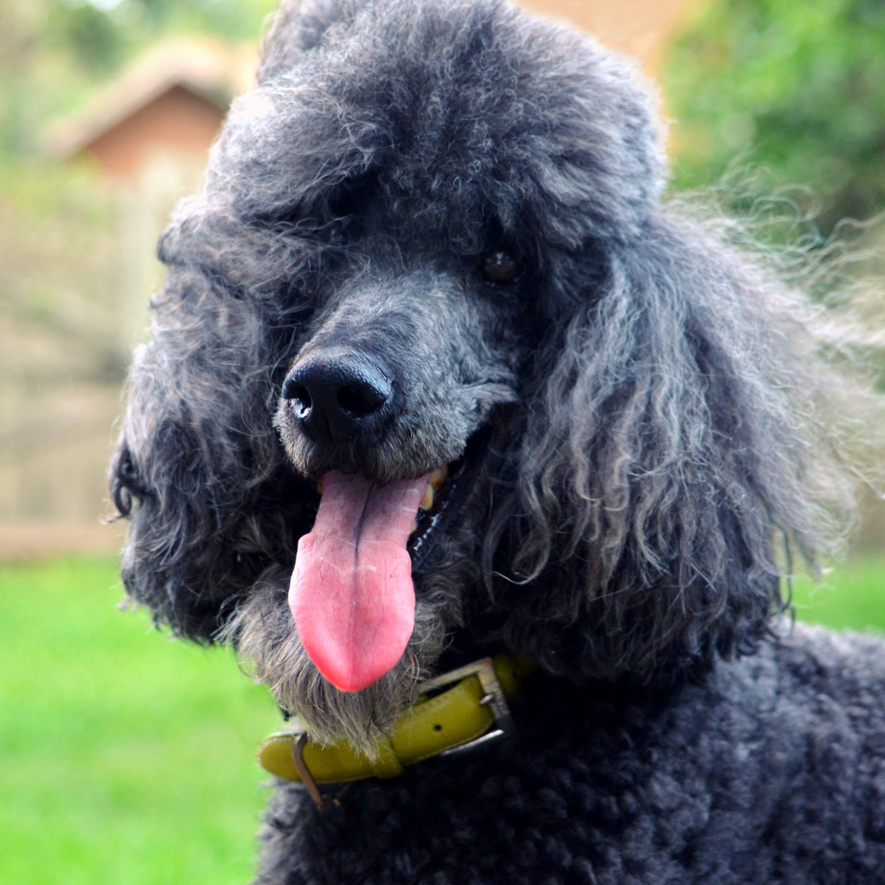

Meet the developers!
Nicole Chen
Her favorite dog is described as "fiercely proud" in its standard. Originally bred for hunting, it's now known for its adorable fluffy butt and unusal vocalizations.
Nicole's favorite dog is the Shiba Inu!

Eleanore Clark
Her favorite dog was created to help hunt waterfowl, but its intelligence and unique looks led to wide employ in circuses. Owners know these dogs to be fussy eaters!

Eleanore's favorite dog is the Poodle!
Dalia Ramos-Hernandez
Her favorite dog is a fun-sized mix of two breeds. One of the breeds, white and fluffy, was famously beloved by Queen Victoria; the other is the national dog of France.